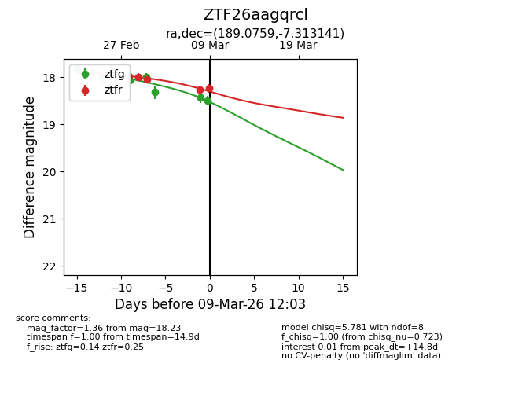
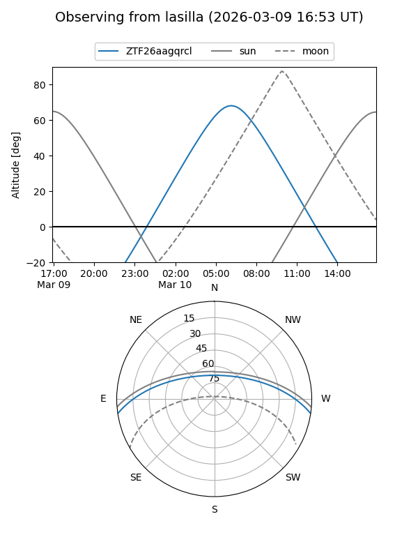
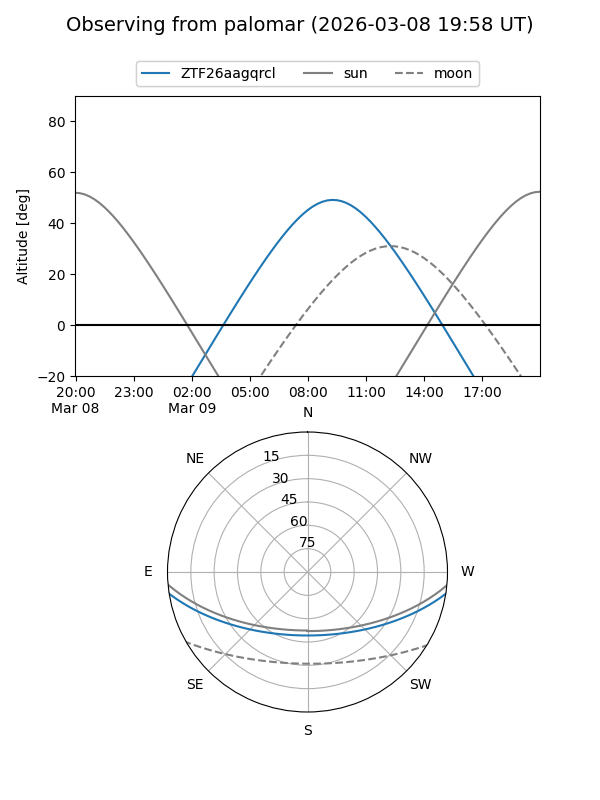
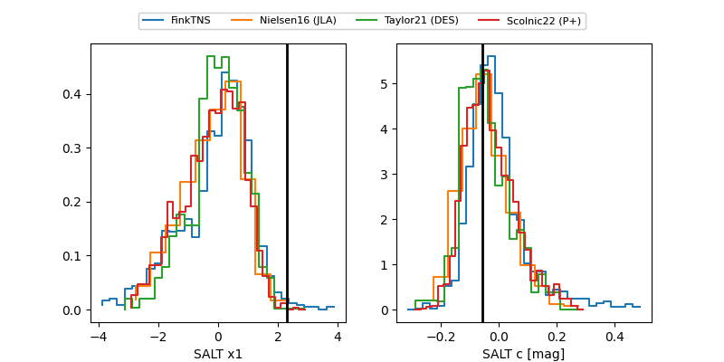

ZTF26aagqrcl
Target ZTF26aagqrcl at 2026-03-09 12:07
Aliases and brokers:
FINK: link
Lasair: link
ALeRCE: link
alt names
ZTF26aagqrcl (ztf,fink_ztf)
Coordinates:
equatorial (ra, dec) = 189.0759,-7.31314
equatorial (HMS+DMS) = 12:36:18.21,-07:18:47.31
galactic (l, b) = (296.3191,+55.36417)
Flags:
Photometry:
last ztfg=18.49, ztfr=18.23
8 ztfg, 5 ztfr detections
Lightcurve

Visibility


Additional plots
